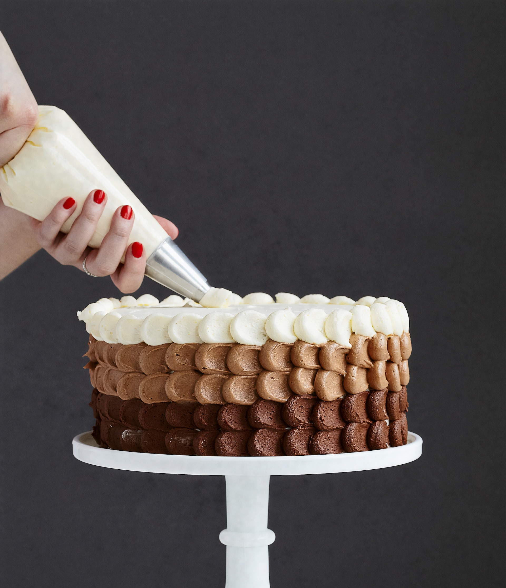
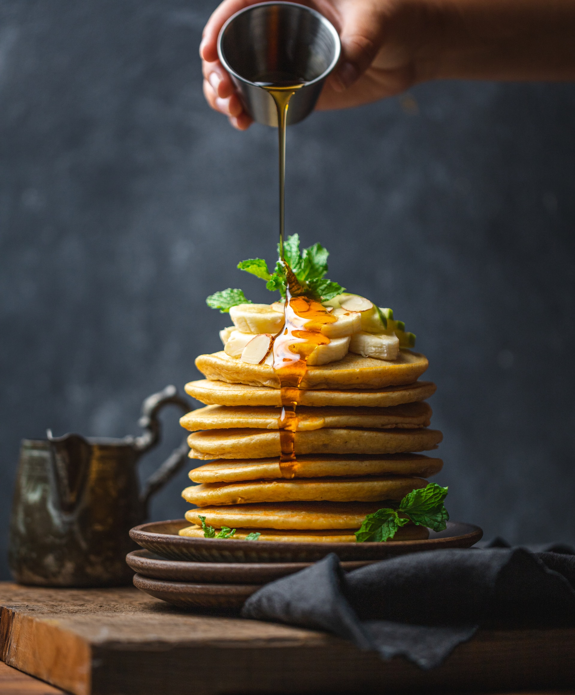

Gastro.
Art.
Belo Horizonte

Gastronomia Artesanal.
Da nossa família para a sua.
Destaque da Semana

Culinária sem Glúten da Tuca
Fazemos bolos, pães, doces e muito mais. Tudo isso sem glúten, sem açúcar e sem lactose.
Nossas Categorias
- Bolos caseiros
- Bolos para festas
- Doces caseiros
- Docinhos
- Pães
- Massas
- Sem glúten
- Sem aćúcar
- Sem lactose
- Salgados
Nossa Missão
Queremos divulgar a culinária familiar, especialmente de famílias católicas.
Você compra comida, eu compro comida, todos nós compramos comida. Então por que comprar comida industrializada de empresas multinacionais bilionárias sem princípios se você pode comprar de uma família local que tem os mesmos valores que você?